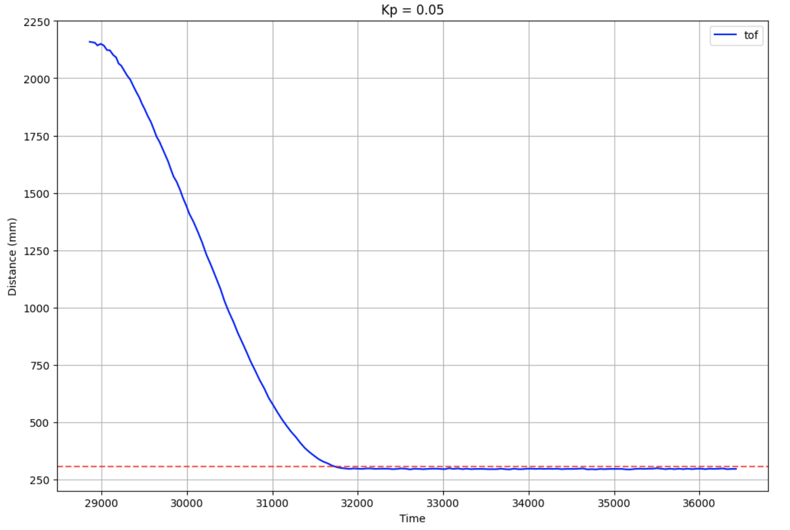
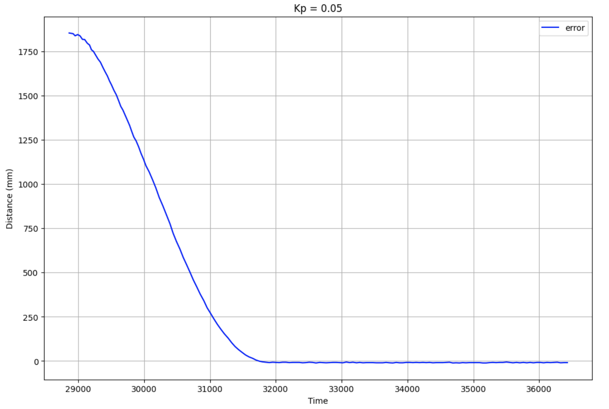
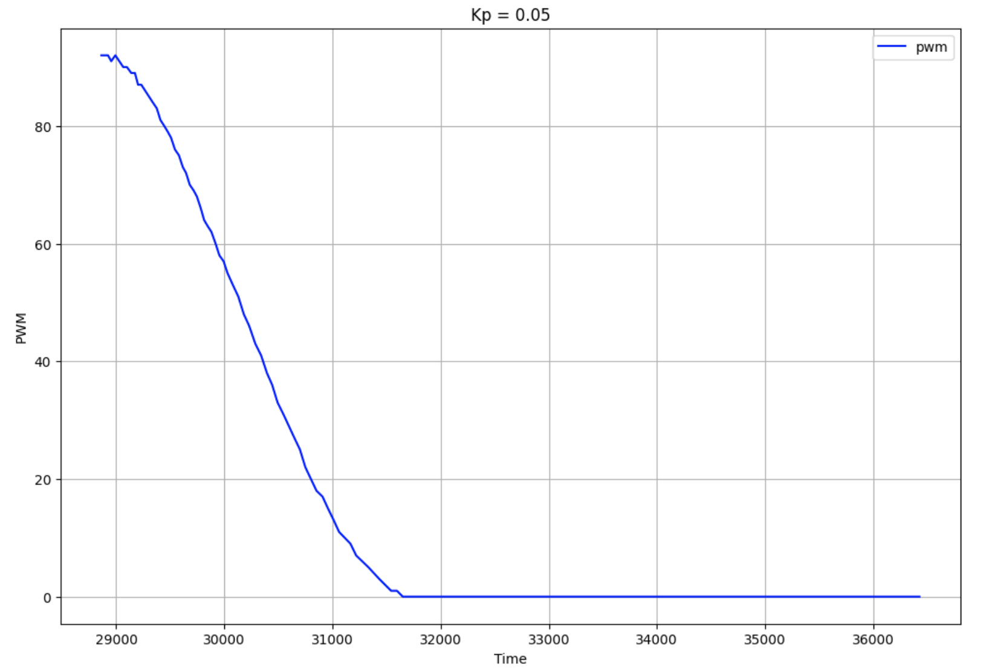
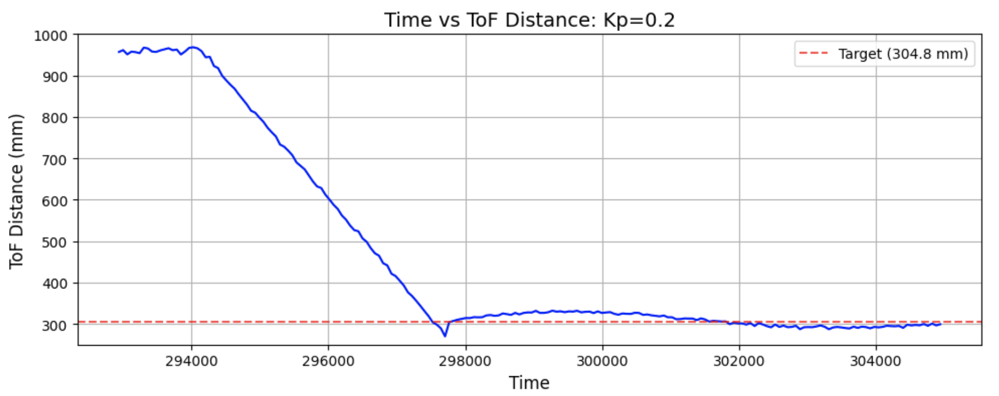
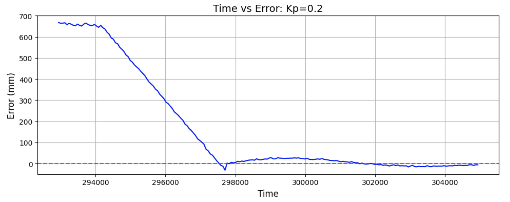

Lab 5: Linear PID and Linear Interpolation
03.04.2025 - 03.11.2025
Prelab
In this lab, a PID controller is implemented to achieve closed-loop control. The controlled state was speed, and a ToF sensor was used to ensure the robot stopped at a set distance from the wall.
PID Overview
A PID controller consists of three key parts:
These parts together form the PID control equation, which I took from Lecture 7:

This equation calculates the PID input value 𝑢(𝑡) using the error 𝑒(𝑡), which represents the difference between the desired and current values. In this lab, the error corresponds to the difference between the target distance from the wall (1 ft) and the robot’s actual distance. The resulting PID input value directly influences the robot’s speed. Proportional control scales the error by a constant K_p, providing an immediate response. Integral control accumulates past errors by integrating over time and multiplying by K_i, helping to eliminate steady-state error. Derivative control predicts future error changes by computing the rate of change of the error and multiplying by K_d, improving system stability.
Bluetooth
Before starting the lab tasks, I modified my code to make data collection and debugging easier. As such, I added a boolean flag, pid_on, that would keep track of whether or not to use the pid controller. I also added three more command types: START_PID, STOP_PID, and GET_PID_DATA. These would be easily callable using Bluetooth, and helped running the car and collecting data much more convenient.
The START_PID case set pid_on to true and set up the tof sensors, which then would allow the pid calculation as well as data collection to begin in the main loop. The STOP_PID case sets the pid_on flag to false and stops the car.
case START_PID:
{
set_up_tof();
pid_i = 0;
start_time = (float)millis();
error_sum = 0;
distanceSensor1.startRanging();
pid_on = true;
break;
}
The third case that I added was GET_PID_DATA, which returns time, distance, and pwm. I implemented this in the same way as in previous labs.
case GET_PID_DATA:
{
for (int i = 0; i < num_data_msgs; i++)
{
tx_estring_value.clear();
tx_estring_value.append(times[i]);
tx_estring_value.append(",");
tx_estring_value.append(distance1_data[i]);
tx_estring_value.append(",");
tx_estring_value.append(pwm_data[i]);
Serial.println(tx_estring_value.c_str());
tx_characteristic_string.writeValue(tx_estring_value.c_str());
}
break;
}
The last part of the bluetooth code was on the Python end, where I would receive the data to plot and analyze. I used a notification handler similar to the ones from previous labs.
data = ""
timeArr = []
tof_pid = []
pwm_pid = []
def notification_handler_pid(uuid, array):
data = ble.bytearray_to_string(array)
if "," in data:
arr = s.split(",")
else:
timeArr.append(int(arr[0]))
tof_pid.append(float(arr[1]))
pwm_pid.append(float(arr[2]))
Proportional Control
I began my PID implementation by first only using proportional control. To better organize my code, I made a function that used PID to update the pwm value. The code below shows just the P component.
int pid(float dist, float target_dist)
{
float current_dist = dist;
float error = dist - target_dist;
float pwm = kp * error;
if (pwm > 0)
{
if (pwm > max_speed)
pwm = max_speed;
return pwm;
}
else if (pwm < 0)
{
if (pwm < -max_speed)
pwm = -max_speed;
return pwm;
}
return pwm;
}
I added a max_speed value, set to ~100, and clipped the pwm values so they wouldn't exceed that speed. This pid function is used in the main loop, updating the time, pwm, and tof arrays whenever new ToF readings were available.
if (pid_on)
{
int distance1;
int pwm;
if (distanceSensor1.checkForDataReady())
{
distance1 = distanceSensor1.getDistance();
distanceSensor1.clearInterrupt();
distanceSensor1.stopRanging();
distanceSensor1.startRanging();
pwm = pid(distance1, target);
if(curr_time - start_time > 20000)
{
pid_on = false;
drive(0, 0);
}
if (pid_i < num_data_msgs)
{
distance1_data[pid_i] = distance1;
pwm_data[pid_i] = pwm;
times[pid_i] = (float)millis();
pid_i++;
}
}
if (pwm > 0)
{
drive(1, pwm);
}
else if (pwm < 0)
{
drive(-1, pwm);
}
else
{
drive(0, 0);
}
I first check if the pid_on flag is true - this code is looped through repeatedly, and will only run the pid code if the pid_on flag has been set to true. Then, I check if the sensor placed at the front of my car (sensor 1) is ready to take a reading. If it is, I take the sensor reading and pass it into the previously mentioned pid function, which returns a corresponding PWM value. I implemented a timing failsafe that stops the pid control after 20 seconds, in the case that Bluetooth disconnects and I am unable to call STOP_PID. I then check if the pid index is within the data array bounds before appending it to the arrays. Using the calculated PWM value, I either move the car foward, backwards, or have it stop (when the pwm is 0, the target has been reached and thus the car doesn't move).
I start off by using a Kp value of 0.05, and the car stopped at the target distance without oscillating.
I tested this Kp value in different areas to make sure that it would work on different kinds of floors, and confirmed that my robot was able to stop 1 foot away without oscillating noticeably. You can see this also in the ToF and error plots from one of the runs' data collection:
 In the ToF graph, the red dotted line is the target distance (1 foot). As the plots show, there is basically no oscillation once the robot reaches the target distance. The error graph on the right follows a similar trend, as once it reaches an error value of zero, it doesn't oscillate further than that. I took this to mean that 0.05 is a good value for my P controller.
I also plotted the PWM values for this run:
My robot starts off at a PWM near the max, and slows down until it reaches the target. Because there was no backwards movement for this run, there are no negative PWM values shown.
While I was pretty lucky in getting a good Kp value on my first attempt, I also tested a Kp value of 0.2.
 As predicted, this run had the car moving back and forth to reach the target distance.
Extrapolation
The next step was to analyze the sampling rate of the ToF sensors, and of the PID loop. Using a similar strategy to Lab 3's sampling rate calculations, I took measurements of both. I determined that the PID loop without taking sensor measurements took ~7 ms, which is a frequency of 142.86 Hz. The ToF sampling period was 40 ms, or ~25 Hz. Because the ToF sensor readings update at a lower frequency, I implemented extrapolation to estimate the robot's position in between readings bcased on the last two sensor readings.
Notes and References
Conclusion
This lab presented several hardware related struggles, but ultimately gave me a better understanding of PID control. I had a lot of issues with my battery, as it would charge for long periods of time but only last enough time for a couple of runs. I attempted to use my friend's battery, and it was perfectly functional. I had to adjust the placement of my forward facing ToF sensor, as it was slightly tilted down and thus made my car stop whenever it touched the ground, but run properly in the air. My ToF sensor would also often sense things in front of it when there was nothing close by.
References
I referenced Mikayla Lahr and Nila Narayan's past Lab 5 reports.